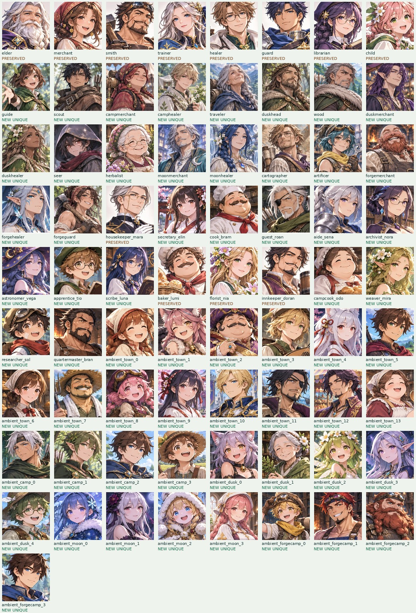

🌲 星森傳說｜v8.1 權威特寫
完整還原您指定的 73 位 NPC 精美特寫，不使用遊戲裡的低解析度像素化替代圖；另將主角三個轉職特寫獨立呈現為待驗收候選稿。
73 / 73原始 NPC 肖像
256²每張 NPC 圖片像素
3主角轉職候選
77 位總角色分成 4 種主角型態及 73 位 NPC。第 5–77 位原圖已從先前遊戲 HTML 找回並與 v8.1 總覽核對；第 2–4 位新生成肖像還未定稿，僅作審核用途；第 1 位主角沿用既有圖像、未修改。
主角四種型態｜三張新增候選特寫
NPC 73 位｜保留原始精美特寫
此區每位都使用從先前遊戲檔案還原的原始 256×256 WebP，而非重新生成。按圖片可放大檢視；各自的原始圖檔都可直接開啟。
您提供的 v8.1 原始總覽，保留不修改：
